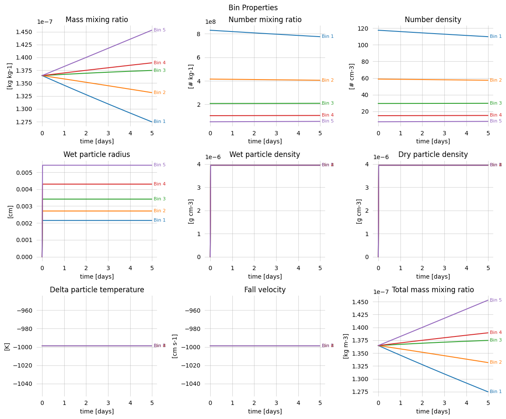
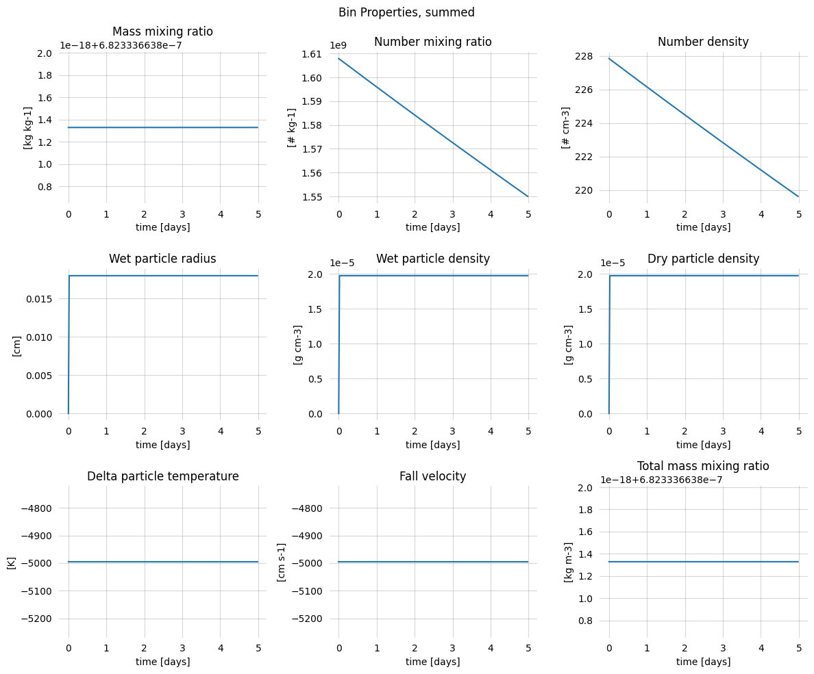
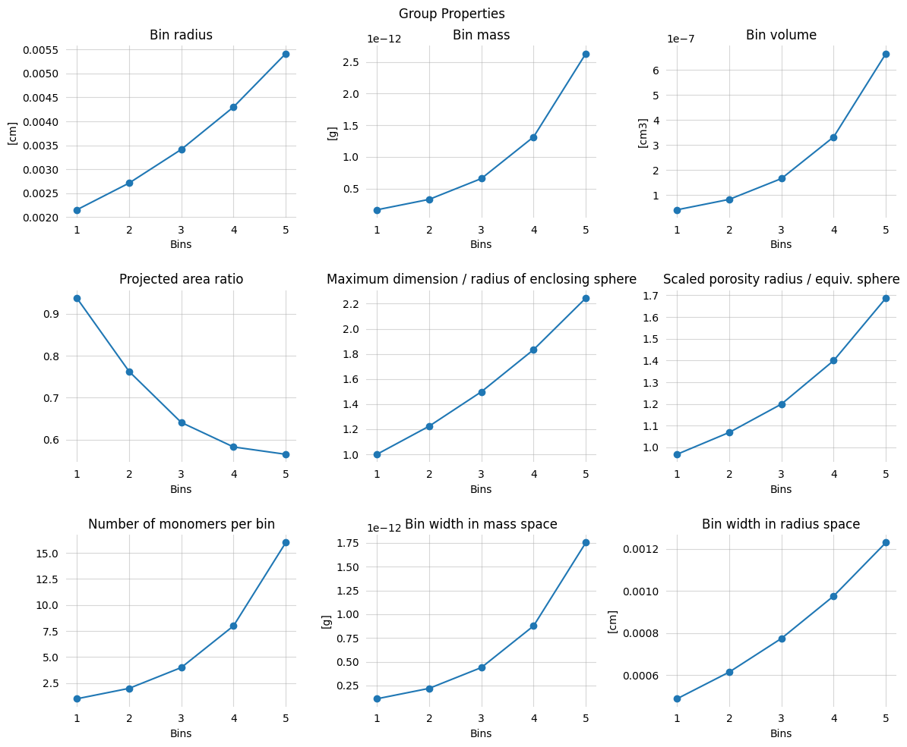
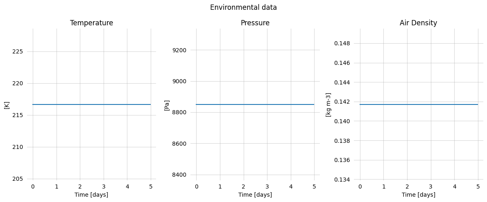

The Community Aerosol and Radiation Model for Atmospheres, CARMA, can be configured and run through musica. This tutorial walks through creating a series of small CARMA model runs of increasing complexity.
First, we need to import our packages
[ ]:
import xarray as xr
import numpy as np
import musica
import ussa1976
import matplotlib.pyplot as plt
Next we will define a few helper functions which will create a dataset for us.
[2]:
def _extract_bin_data(data, key, nbin, nelem):
# input data is time * bin * elem, each element contains data for each vertical level
# so output should be time * bin * elem * z
result = []
for data_step in data:
step_data = []
for i in range(nbin):
bin_data = []
for j in range(nelem):
bin_data.append(data_step[i][j][key])
step_data.append(bin_data)
result.append(step_data)
# result is time * bin * elem * z
# transpose to match expected output shape: time * z * bin * elem
return np.transpose(result, (0, 3, 1, 2))
def _extract_scalar_bin_data(data, key, nbin, nelem):
result = []
for data_step in data:
step_data = []
for i in range(nbin):
bin_data = []
for j in range(nelem):
bin_data.append(data_step[i][j][key])
step_data.append(bin_data)
result.append(step_data)
return result
def extract_data(params, state, env, bin_data, time_array, vertical_center, vertical_levels):
nz = params.nz
nbin = params.nbin
nelem = len(params.elements)
ngroup = len(params.groups)
ngas = len(params.gases)
nstep = params.nstep
# Create coordinates
coords = {}
coords['lat'] = ('y', [state.latitude])
coords['lon'] = ('x', [state.longitude])
coords['z'] = ('z', vertical_center, {
'units': 'm', 'long_name': 'Vertical center height'})
coords['z_levels'] = ('z_levels', vertical_levels, {
'units': 'm', 'long_name': 'Vertical interface height'})
coords['time'] = ('time', time_array, {'units': 's', 'long_name': 'Time'})
# Bin coordinates (1-indexed like Fortran)
coords['bin'] = ('bin', list(range(1, nbin + 1)))
coords['group'] = ('group', list(range(1, ngroup + 1)))
coords['elem'] = ('elem', list(range(1, nelem + 1)))
coords['nwave'] = ('nwave', list(
range(1, len(params.wavelength_bins) + 1)))
data_vars = {}
# Atmospheric state variables
pressure = [env[i]['pressure'] for i in range(len(env))]
temperature = [env[i]['temperature'] for i in range(len(env))]
air_density = [env[i]['air_density'] for i in range(len(env))]
data_vars['pressure'] = (
('time', 'z'), pressure, {'units': 'Pa', 'long_name': 'Pressure'})
data_vars['temperature'] = (
('time', 'z'), temperature, {'units': 'K', 'long_name': 'Temperature'})
data_vars['air_density'] = (
('time', 'z'), air_density, {'units': 'kg m-3', 'long_name': 'Air density'})
# bin_data is time * bin * elem, each element contains data for each vertical level
# so bin_data's shape is: time * bin * elem * z
# Vector data (with z-dimension)
data_vars['mass_mixing_ratio'] = (
('time', 'z', 'bin', 'elem'), _extract_bin_data(bin_data, 'mass_mixing_ratio', nbin, nelem), {
'units': 'kg kg-1', 'long_name': 'Mass mixing ratio'})
data_vars['number_mixing_ratio'] = (
('time', 'z', 'bin', 'elem'), _extract_bin_data(bin_data, 'number_mixing_ratio', nbin, nelem), {
'units': '# kg-1', 'long_name': 'Number mixing ratio'})
data_vars['number_density'] = (
('time', 'z', 'bin', 'elem'), _extract_bin_data(bin_data, 'number_density', nbin, nelem), {
'units': '# cm-3', 'long_name': 'Number density'})
data_vars['nucleation_rate'] = (
('time', 'z', 'bin', 'elem'), _extract_bin_data(bin_data, 'nucleation_rate', nbin, nelem), {
'units': '# cm-3 s-1', 'long_name': 'Nucleation rate'})
data_vars['wet_particle_radius'] = (
('time', 'z', 'bin', 'elem'), _extract_bin_data(bin_data, 'wet_particle_radius', nbin, nelem), {
'units': 'cm', 'long_name': 'Wet particle radius'})
data_vars['wet_particle_density'] = (
('time', 'z', 'bin', 'elem'), _extract_bin_data(bin_data, 'wet_particle_density', nbin, nelem), {
'units': 'g cm-3', 'long_name': 'Wet particle density'})
data_vars['dry_particle_density'] = (
('time', 'z', 'bin', 'elem'), _extract_bin_data(bin_data, 'dry_particle_density', nbin, nelem), {
'units': 'g cm-3', 'long_name': 'Dry particle density'})
data_vars['fall_velocity'] = (
('time', 'z_levels', 'bin', 'elem'), _extract_bin_data(bin_data, 'fall_velocity', nbin, nelem), {
'units': 'cm s-1', 'long_name': 'Fall velocity'})
data_vars['delta_particle_temperature'] = (
('time', 'z', 'bin', 'elem'), _extract_bin_data(bin_data, 'delta_particle_temperature', nbin, nelem), {
'units': 'K', 'long_name': 'Delta particle temperature'})
data_vars['kappa'] = (
('time', 'z', 'bin', 'elem'), _extract_bin_data(bin_data, 'kappa', nbin, nelem), {
'units': '', 'long_name': 'Hygroscopicity parameter'})
data_vars['total_mass_mixing_ratio'] = (
('time', 'z', 'bin', 'elem'), _extract_bin_data(bin_data, 'total_mass_mixing_ratio', nbin, nelem), {
'units': 'kg m-3', 'long_name': 'Total mass mixing ratio'})
# Scalar data (no z-dimension)
data_vars['particle_mass_on_surface'] = (
('time', 'bin', 'elem'), _extract_scalar_bin_data(bin_data, 'particle_mass_on_surface', nbin, nelem), {
'units': 'kg m-2', 'long_name': 'Mass of particle on surface'})
data_vars['sedimentation_flux'] = (
('time', 'bin', 'elem'), _extract_scalar_bin_data(bin_data, 'sedimentation_flux', nbin, nelem), {
'units': 'kg m-2 s-1', 'long_name': 'Sedimentation flux'})
data_vars['deposition_velocity'] = (
('time', 'bin', 'elem'), _extract_scalar_bin_data(bin_data, 'deposition_velocity', nbin, nelem), {
'units': 'cm s-1', 'long_name': 'Deposition velocity'})
# Create the dataset
return xr.Dataset(
data_vars=data_vars,
coords=coords,
attrs={
'title': 'CARMA aerosol model output',
'description': 'Output from CARMA aerosol simulation',
'nz': nz,
'nbin': nbin,
'nelem': nelem,
'ngroup': ngroup,
'ngas': ngas,
'nstep': nstep
}
)
def extract_bin_data_for_timestep(params, state):
nbin = params.nbin
nelem = len(params.elements)
bin_data = [[] for _ in range(nbin)]
for i in range(nbin):
for j in range(nelem):
bin_data[i].append(state.get_bin(i + 1, j + 1))
return bin_data
Finally, we can run a simple aluminum configuration. For now, we will use the pre-made configuration which hides the details of creating groups, elements, coagulation schemes so that we can get to running a simple box model quickly.
[ ]:
group = musica.carma.CARMAGroupConfig(
name="aluminum",
shortname="PRALUM",
rmrat=2.0,
rmin=21.5e-6,
rmon=21.5e-6,
ishape=musica.carma.ParticleShape.SPHERE,
eshape=1.0,
mie_calculation_algorithm=musica.carma.MieCalculationAlgorithm.TOON_1981,
is_ice=False,
is_fractal=True,
do_wetdep=False,
do_drydep=True,
do_vtran=True,
solfac=0.0,
scavcoef=0.0,
df=[1.6] * 5, # 5 bins with fractal dimension 1.6
falpha=1.0
)
# Create aluminum element
element = musica.carma.CARMAElementConfig(
igroup=1,
isolute=0,
name="Aluminum",
shortname="ALUM",
itype=musica.carma.ParticleType.INVOLATILE,
icomposition=musica.carma.ParticleComposition.ALUMINUM,
rho=0.00395, # kg/m3
arat=[1.0] * 5, # 5 bins with area ratio 1.0
kappa=0.0,
)
# Create coagulation
coagulation = musica.carma.CARMACoagulationConfig(
igroup1=1,
igroup2=1,
igroup3=1,
algorithm=musica.carma.ParticleCollectionAlgorithm.FUCHS)
params = musica.carma.CARMAParameters(
nbin=5,
nz=1,
dtime=1800.0,
groups=[group],
elements=[element],
coagulations=[coagulation]
)
FIVE_DAYS_IN_SECONDS = 432000
params.nstep = FIVE_DAYS_IN_SECONDS // params.dtime
params.initialization.do_vtran = False
n_levels = params.nz
deltaz=1000.0
zmin=16500.0
vertical_center = zmin + (np.arange(n_levels) + 0.5) * deltaz
vertical_levels = zmin + np.arange(n_levels + 1) * deltaz
centered_variables = ussa1976.compute(z=vertical_center, variables=["t", "p", "rho"])
edge_variables = ussa1976.compute(z=vertical_levels, variables=["p"])
temperature = centered_variables.t.values
pressure = centered_variables.p.values
pressure_levels = edge_variables.p.values
density = centered_variables.rho.values
carma = musica.CARMA(params)
mmr_initial = 5e9 / (deltaz * 2.57474699e14) / density[0]
state = carma.create_state(
time_step=params.dtime,
temperature=temperature,
pressure=pressure,
pressure_levels=pressure_levels,
vertical_center=vertical_center,
vertical_levels=vertical_levels,
longitude=0.0,
latitude=-105.0,
coordinates=musica.carma.CarmaCoordinates.CARTESIAN,
)
for i in range(params.nbin):
for j in range(len(params.elements)):
state.set_bin(i + 1, j + 1, mmr_initial)
bin_data = [extract_bin_data_for_timestep(params, state)]
env = [state.get_environmental_values()]
time_array = [0.0] # Start with time 0
# Run the simulation for the specified number of steps
for step in range(1, int(params.nstep)):
state.step()
bin_data.append(extract_bin_data_for_timestep(params, state))
env.append(state.get_environmental_values())
time_array.append(step * params.dtime)
ds = extract_data(params, state, env, bin_data, time_array, vertical_center, vertical_levels)
[4]:
ds
[4]:
<xarray.Dataset> Size: 152kB
Dimensions: (time: 240, z: 1, bin: 5, elem: 1, z_levels: 2,
y: 1, x: 1, group: 1, nwave: 0)
Coordinates:
lat (y) float64 8B -105.0
lon (x) float64 8B 0.0
* z (z) float64 8B 1.7e+04
* z_levels (z_levels) float64 16B 1.65e+04 1.75e+04
* time (time) float64 2kB 0.0 1.8e+03 ... 4.302e+05
* bin (bin) int64 40B 1 2 3 4 5
* group (group) int64 8B 1
* elem (elem) int64 8B 1
* nwave (nwave) float64 0B
Dimensions without coordinates: y, x
Data variables: (12/17)
pressure (time, z) float64 2kB 8.85e+03 ... 8.85e+03
temperature (time, z) float64 2kB 216.6 216.6 ... 216.6
air_density (time, z) float64 2kB 0.1417 0.1417 ... 0.1417
mass_mixing_ratio (time, z, bin, elem) float64 10kB 1.365e-07 ....
number_mixing_ratio (time, z, bin, elem) float64 10kB 8.299e+08 ....
number_density (time, z, bin, elem) float64 10kB 117.6 ... 7...
... ...
delta_particle_temperature (time, z, bin, elem) float64 10kB -999.0 ... ...
kappa (time, z, bin, elem) float64 10kB 0.0 ... -1....
total_mass_mixing_ratio (time, z, bin, elem) float64 10kB 1.365e-07 ....
particle_mass_on_surface (time, bin, elem) float64 10kB 0.0 0.0 ... 0.0
sedimentation_flux (time, bin, elem) float64 10kB 0.0 0.0 ... 0.0
deposition_velocity (time, bin, elem) float64 10kB -999.0 ... -999.0
Attributes:
title: CARMA aerosol model output
description: Output from CARMA aerosol simulation
nz: 1
nbin: 5
nelem: 1
ngroup: 1
ngas: 0
nstep: 240.0[5]:
# convert from seconds to days
ds = ds.assign_coords(time=ds.time / 86400)
[6]:
fig, axs = plt.subplots(figsize=(12, 10), nrows=3, ncols=3)
vars = [
'mass_mixing_ratio', 'number_mixing_ratio', 'number_density',
'wet_particle_radius', 'wet_particle_density', 'dry_particle_density',
'delta_particle_temperature', 'fall_velocity', 'total_mass_mixing_ratio'
]
for var, ax in zip(vars, axs.ravel()):
for i in range(5): # 5 bins
y = ds[var][:, 0, i, 0]
line, = ax.plot(ds.time, ds[var][:, 0, i, 0], label=f'Bin {i+1}')
buffer = (ds.time.values[-1] - ds.time.values[-2]) * 4.50
ax.text(ds.time.values[-1] + buffer, y.values[-1], f'Bin {i+1}',
va='center', ha='left', fontsize=8, color=line.get_color())
ax.spines[:].set_visible(False)
ax.grid(alpha=0.5)
ax.tick_params(width=0)
ax.set_xlabel('time [days]')
ax.set_ylabel(f'[{ds[var].units}]')
ax.set_title(f'{ds[var].long_name}')
fig.suptitle("Bin Properties")
fig.tight_layout()

[7]:
fig, axs = plt.subplots(figsize=(12, 10), nrows=3, ncols=3)
vars = [
'mass_mixing_ratio', 'number_mixing_ratio', 'number_density',
'wet_particle_radius', 'wet_particle_density', 'dry_particle_density',
'delta_particle_temperature', 'fall_velocity', 'total_mass_mixing_ratio'
]
for var, ax in zip(vars, axs.ravel()):
ax.plot(ds.time, ds[var].sum(dim='bin')[:, 0, 0])
ax.spines[:].set_visible(False)
ax.grid(alpha=0.5)
ax.tick_params(width=0)
ax.set_xlabel('time [days]')
ax.set_ylabel(f'[{ds[var].units}]')
ax.set_title(f'{ds[var].long_name}')
fig.suptitle("Bin Properties, summed")
fig.tight_layout()

[8]:
group_config, group_props = carma.get_group_properties(1)
[9]:
fig, axs = plt.subplots(figsize=(12, 10), nrows=3, ncols=3)
vars = [
'bin_radius', 'bin_mass', 'bin_volume',
'projected_area_ratio', 'radius_ratio', 'porosity_ratio',
'number_of_monomers_per_bin', 'bin_width_mass', 'bin_width'
]
name_to_label = {
"bin_radius": "Bin radius",
"bin_radius_lower_bound": "Lower bound of bin radius",
"bin_radius_upper_bound": "Upper bound of bin radius",
"bin_width": "Bin width in radius space",
"bin_mass": "Bin mass",
"bin_width_mass": "Bin width in mass space",
"bin_volume": "Bin volume",
"projected_area_ratio": "Projected area ratio",
"radius_ratio": "Maximum dimension / radius of enclosing sphere",
"porosity_ratio": "Scaled porosity radius / equiv. sphere",
"extinction_coefficient": "Extinction coefficient",
"single_scattering_albedo": "Single scattering albedo",
"asymmetry_factor": "Asymmetry factor",
"particle_number_element_for_group": "Index of element for particle number",
"number_of_core_mass_elements_for_group": "Number of core mass elements",
"element_index_of_core_mass_elements": "Indices of core mass elements",
"last_prognostic_bin": "Last prognostic bin",
"number_of_monomers_per_bin": "Number of monomers per bin"
}
name_to_units = {
"bin_radius": "cm",
"bin_radius_lower_bound": "cm",
"bin_radius_upper_bound": "cm",
"bin_width": "cm",
"bin_mass": "g",
"bin_width_mass": "g",
"bin_volume": "cm3",
"projected_area_ratio": "",
"radius_ratio": "",
"porosity_ratio": "",
"extinction_coefficient": "m-1",
"single_scattering_albedo": "",
"asymmetry_factor": "",
"particle_number_element_for_group": "",
"number_of_core_mass_elements_for_group": "",
"element_index_of_core_mass_elements": "",
"last_prognostic_bin": "",
"number_of_monomers_per_bin": ""
}
for var, ax in zip(vars, axs.ravel()):
line, = ax.plot(group_props[var], marker='o')
ax.spines[:].set_visible(False)
ax.grid(alpha=0.5)
ax.tick_params(width=0)
ax.set_xlabel('Bins')
ax.set_xticks(range(5))
ax.set_xticklabels([1, 2, 3, 4, 5])
if name_to_units[var]:
ax.set_ylabel(f'[{name_to_units[var]}]')
ax.set_title(f'{name_to_label[var]}')
fig.suptitle("Group Properties")
fig.tight_layout()

[10]:
env_data = {
key: np.array([d[key][0] if d[key] is not None else np.nan for d in env])
for key in ['temperature', 'pressure', 'air_density']
}
[11]:
fig, axs = plt.subplots(figsize=(12, 5), nrows=1, ncols=3)
vars = [
'temperature', 'pressure', 'air_density'
]
name_to_label = {
"temperature": "Temperature",
"pressure": "Pressure",
"air_density": "Air Density",
}
name_to_units = {
"temperature": "K",
"pressure": "Pa",
"air_density": "kg m-3",
}
for var, ax in zip(vars, axs.ravel()):
line, = ax.plot(ds.time, env_data[var])
ax.spines[:].set_visible(False)
ax.grid(alpha=0.5)
ax.tick_params(width=0)
ax.set_xlabel('Time [days]')
ax.set_ylabel(f'[{name_to_units[var]}]')
ax.set_title(f'{name_to_label[var]}')
fig.suptitle("Environmental data")
fig.tight_layout()

[ ]: